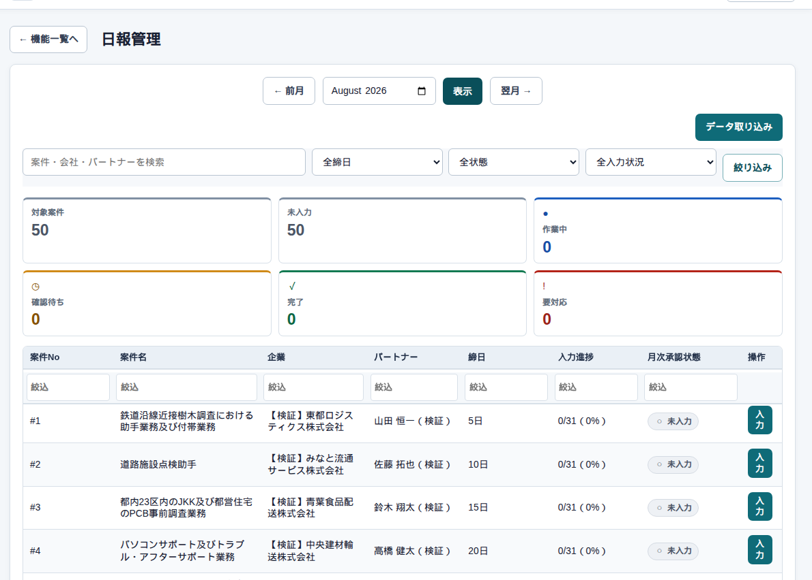
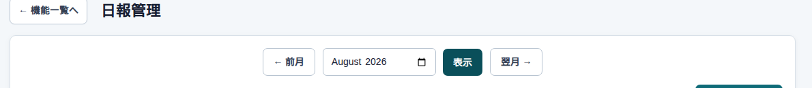
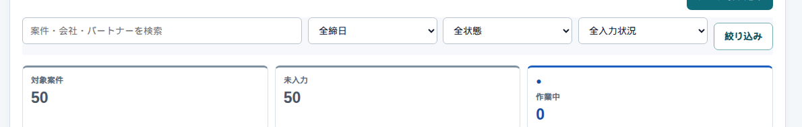
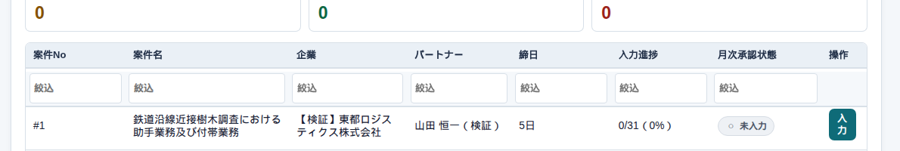
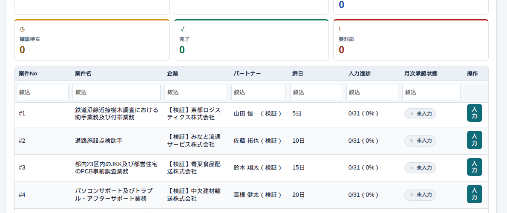
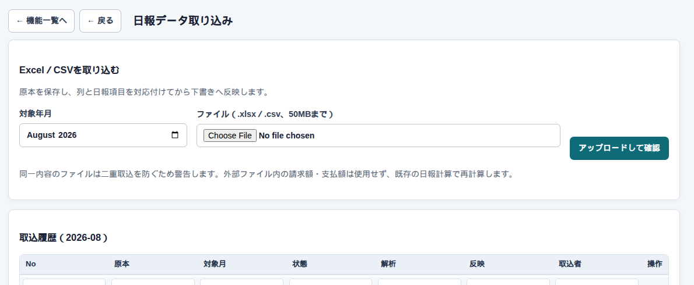

日々の運用 → 日報
日報の一覧
まず、この画面
ログインしたら、左の「日々の運用」から 日報 を押します。出てくるのがこの一覧です。ここでは時間は入れません。入れる案件を探す画面です。
1行が「この案件の、この月」です。企業名、パートナー、締日、何日分入っているか、月の承認がどこまでかが並びます。

総務や事務が、届いたFAXを片付けるときにいちばん使います。営業は担当案件の進み具合、承認する人は「確認待ち」や「要対応」の件数を見ます。パートナー権限なら、自分の案件だけ出ます。
月を変える

「前月」「翌月」でひとつずつ動かすか、年月を直接入れて 表示 を押します。入れただけでは表は変わりません。
右端の データ取り込み は、ExcelやCSVをまとめて載せる入口です。管理者と総務にだけ出ます。
探す・絞る

| ここ | 何をするか |
|---|---|
| 検索 | 案件・会社・パートナーの名前の一部 |
| 締日 / 状態 / 入力状況 | 5日締めだけ、未入力だけ、など |
| 絞り込み | 上の条件を表に反映する |
| 対象案件〜要対応 | 件数のカード。もう一度押すと絞り込みが外れる |
カードを押してもデータは消えません。表示が減るだけです。「作業中」は入力中と申請できるもの、「要対応」は差戻しと訂正中です。
入力へ進む

見たい行をダブルクリックするか、右の 入力 を押します。次は 日付ごとの入力 です。
列の見出しをクリックすると並びが変わります。見出しのすぐ下の「絞込」は、その列だけさらに狭めます。

よくある使い方
未入力だけ片付ける
2026年8月を出して、「未入力」のカードを押します。残った行の「入力」から、届いた日報を入れていきます。
5日締めだけ先に見る
締日を「5日」にして「絞り込み」です。ほかの案件は隠れるだけで、消えてはいません。
Excelから入れるとき
手入力ではなくファイルで載せるときは、一覧の「データ取り込み」です。

| ここ | 何をするか |
|---|---|
| 対象年月 | 載せる月 |
| ファイル | .xlsx または .csv（50MBまで） |
| アップロードして確認 | 原本を残し、列の対応を決めてから下書きへ |
| 取込履歴 | 同じ月に、以前取り込んだもの |
ファイルに書いてある請求額・支払額は使いません。載ったあとも、こちらの料金設定で計算し直します。すでに確認済み・承認済みの日は上書きしません。同じ内容をもう一度入れると警告が出ます。
気をつけること
「データ取り込み」が見当たらない人は、管理者・総務ではありません。経営者は原本を見る側です。
隣のメニュー「日報提出」は、届いたかどうかのチェックです。この一覧の入力進捗とは連動しません。